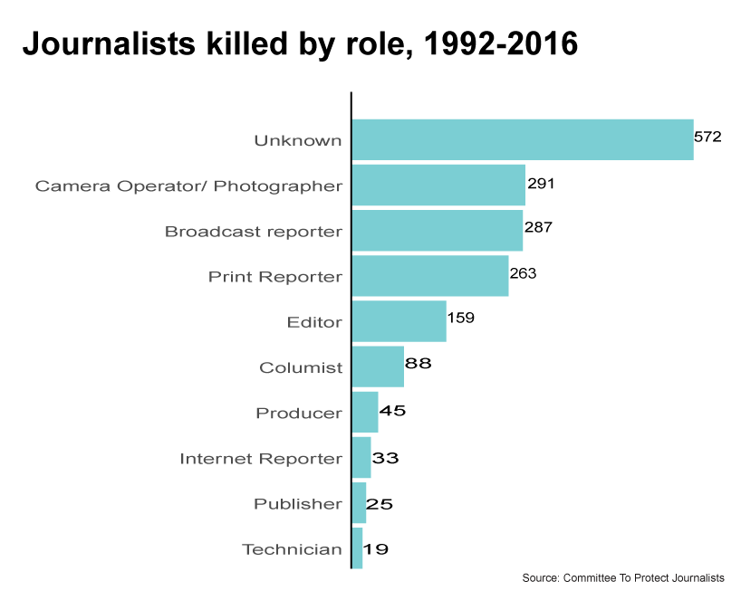

Journalism: One of the World's Most Dangerous Professions
This project uses the Committee To Project Journalists data to illustrate journalism is one of the world's most dangerous professions. Here is their website https://cpj.org/killed/2016/
Background of the data
Commmitted To Project Journalist (CPJ) began compiling detailed records on journalsit deaths in 1992. They apply strict journalistic standards when investigating a death. In this database, CPJ includes only confirmed cases, they do not include journalists who were killed in accidents such as car or plane crashes. CPJ defines journalists as people work in print, in photographs, on radio, on television and online. They also include staff journalists, freelancers and people cover news or comment on public affairs through any media.
As a result, CPJ classify deaths into three types:
1) Motive confirmed - Journalists were murdered in direct reprisal for their work; were killed in crossfire during combat situations; or were killed while carrying out dangerious assignments such as coverage of a street protest.
2) Motive unconfirmed - The motive was unclear and still under investigation.
3) Media Workers - In 2003, CPJ began documenting the deaths of media support workers, such as translators, drivers, fixers, and administrative workers.
Statistical Analysis and Charts
According to the CPJ, 1,782 journalists were killed from 1992 to present around the world. From 55 in 1992 up to 102 in 2006, down to 34 in 1996. In 2007, it was considered an exceptionally deadly year, 111 journalists were killed. Since 2012, fewer reporters were killed, 59 died as of October 2016.
In the past 25 years, Iraq is the deadliest country on the average, the Philippines is the second, the third is Syria, then Mexico, Pakistan, Columbia, Russia, India, Somalia and Algeria.

The CPJ's data also shows the roles held by the victims. So, what type of journalism jobs are the most dangerous?
